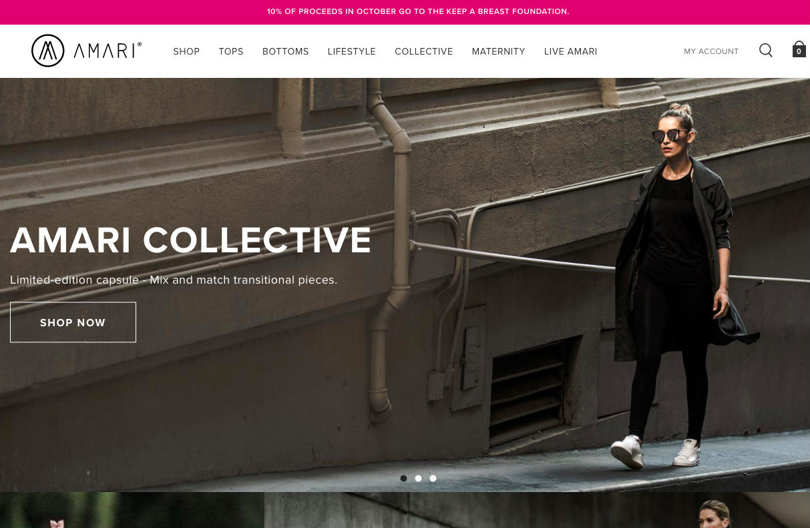
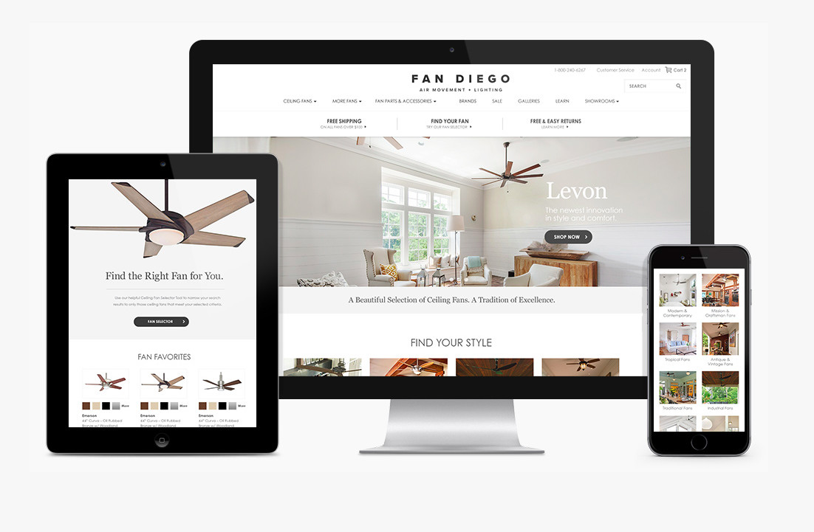

Launched a mobile-first interactive timeline showcasing quintessential moments in the history of legendary brand Vans over the past 50 years
Responsibilities
Assisted team by shielding them from client demands while removing roadblocks to ensure design and development deliverables were met
Organized historical assets under a tight timeline leading a fast-paced agile approach while collaborating with stakeholders across a large corporate organization
Provided timely status reports, led daily stand-ups, attended sprint reviews, and conducted retrospectives that enabled continuous integration
Amari - Brand Creation, Responsive Website, and eCommerce Platform

Amari screen shot
Assisted conceptualization, launch, and development of new active wear brand Amari collaborating with a cross-functional internal team and a hands-on, local San Diego client
Responsibilities
Led a team of developers, designers, and marketers to deliver multiple parallel milestones in a timely fashion to maximize brand outreach
Increased internal team's velocity by removing barriers such as client questions, demands, and approvals
Kept up with a nimble fashion organization working closely with a demanding on-site client who frequently changed direction
Awards
MobileWebAwards, Best Fashion or Beauty Mobile Website
Davey Awards Gold, Fashion Website
OMMA Awards Finalist, Fashion/Beauty/Cosmetics Website
Fan Diego - Digital Branding, Responsive Website, and eCommerce Platform

Fan Diego screen shot
Rebranded, positioned, and launched and new responsive eCommerce platform that implemented tech-heavy features like multiple EDI integrations with national ceiling fan manufacturers
Responsibilities
Provided timely status reports, led daily stand-ups, attended sprint reviews, and conducted retrospectives that enabled continuous integration
Guided an internal product and engineering team through an agile workflow increasing efficiency and customer satisfaction
Provided technical support and development assistance on eCommerce website
Awards
MobileWebAwards, Outstanding Mobile Website
IMA Award Best in Class, Retail
Davey Awards Silver, Websites - Small Business
WMA WebAward Standard of Excellence, Small Business
Managed the redesign and development of Cuker’s first version of the agency’s own award-winning mobile responsive website
Responsibilities
While juggling multiple client demands, led a cross-functional team of developers, designers, and marketers to redesign and upgrade agency’s website to a mobile responsive framework
Collaborated with agency CEO and multiple department directors navigating a constantly changing playing field
Continued to update and redefine site on a weekly basis while managing different levels of continuously changing priorities
Awards
MobileWebAwards, Best Interactive Services Mobile Website
While employed by Independence Blue Cross (IBC), managed the development of Good2BMe, a website focusing on health education and promoting childhood immunization
Responsibilities
Was a member of the team that conceptualized the idea.
Worked closely with a cross-functional team of business analysts, cyber-security officers, designers, lawyers, writers, and web developers/engineers while keeping upper management in the loop.
Developed all of the written content in Flash and wrote documentation detailing the process.
Worked closely with IS department on a variety of issues that included proxies, caching, and server load.
Tested site on different browsers and operating systems.
Worked hand-in-hand with IS department to create templates in Interwoven’s TeamSite so the Public Relations (PR) and Human Resources (HR) departments at IBC could submit their own content
Responsibilities
Saved the Internet Communications department 100 hours and $30,000 per year.
Wrote documentation for PR and HR on the detailed process of contributing content.
Trained content contributors from PR and HR on how to use TeamSite and upload their content.
Served as the primary point of contact when contributors experienced problems.
Resolved multiple issues including but not limited to TeamSite access denial and file organization.